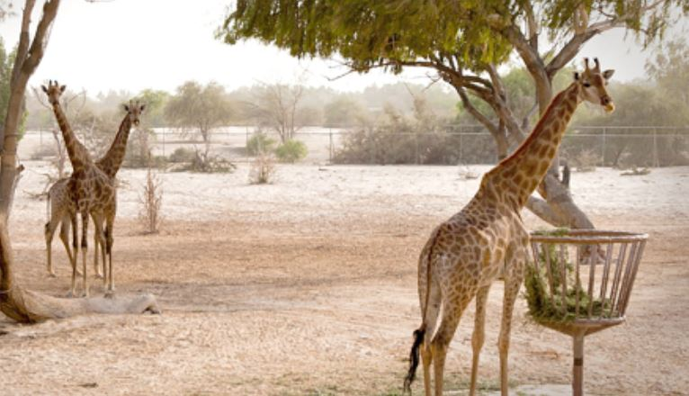

Al Areen Wildlife Park is a nature reserve and zoo, located in Sakhir, Bahrain. It is one of five other protected areas in the country and it is the only designated protected area on land, in the country. Wikipedia
